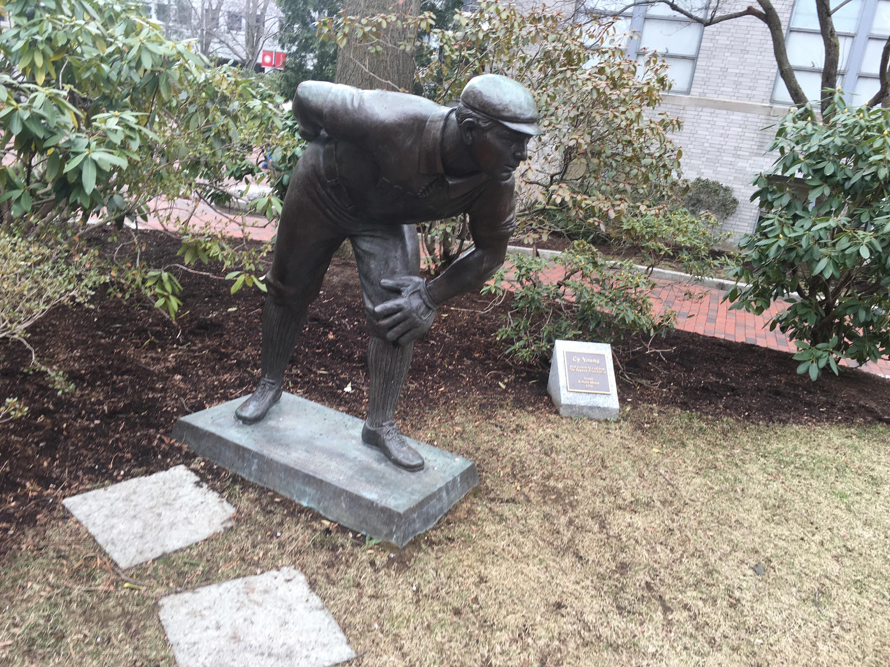

Location 4
Cy Young Statue outside Churchill Hall
Find the black info plaque next to the Cy Young Statue, pictured
above.

Tap for directions to
Cy Young Statue
Where Cabot Hall now stands was the field for the first World Series, played between the Pittsburg Pirates and what Boston team?
Boston Red Sox
Boston Pilgrims
Boston Buccaneers
Boston Patriots
Boston Pilgrims
Boston Buccaneers
Boston Patriots